Conformal mapping CAD surfaces#
A conformal lattice lets a repeated structure follow a curved surface instead of a rectangular block. You still choose the lattice pattern — for example, a gyroid sheet or an octet beam network — and the cell map decides where each cell sits in the finished shape. Beam radii and wall thicknesses remain millimetre-based controls.
This guide uses exact CAD faces: the surface information already stored in a CAD model supplies the map. If your starting surface is a triangle mesh, such as an STL, a scan, or a generated mesh patch, use Conformal mapping triangle meshes instead. Both workflows can be combined because they use the same surface interface; the general mm.cell_map_from_surface(...) and mm.cell_map_between_surfaces(...) functions accept either surface type. The CAD-specific functions below are convenient names for the same operations.
How a face becomes a cell map#
For one face, the map uses U and V to move across the surface, and W to move away from it. W follows the face’s direction (its normal) for the requested signed height: a positive height extends in the normal direction, while a negative height extends inward.
{kind=link}
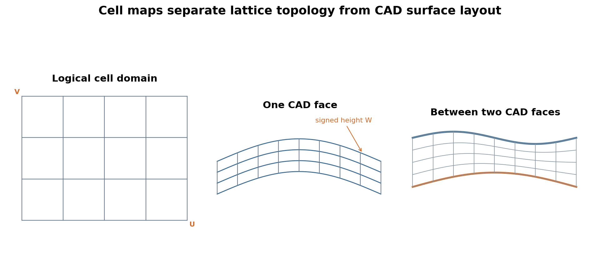
Logical coordinates run from [0, nu] × [0, nv] × [0, nw]; each whole-number interval is one cell. A periodic direction, such as the wraparound direction of a cylinder, stays connected at its seam. For trimmed faces, trim controls how the map meets the real boundary: the default trim="boundary" clips smoothly to the edge curve, trim="cells" keeps or removes whole cells, and trim="none" leaves the map untrimmed. See the three trimming modes for a visual comparison.
Each comparison below uses one fixed orthographic camera. Slide the handle: the left image shows the CAD face that was selected, and the right image shows the lattice created from it.
Map between two faces#
Use two faces when the lattice must fill a curved shell and both sides matter. Here the inner and outer cylinder walls become the two W boundaries, rather than extending a fixed distance from one face.
import cadquery as cq
import pyvcad as pv
import pyvcad_metamaterials as mm
import pyvcad_rendering as viz
# These two cylindrical side faces bound the shell that will contain the lattice.
inner_cad = cq.Workplane("XY").circle(15.0).extrude(30.0)
outer_cad = cq.Workplane("XY").circle(22.0).extrude(30.0)
inner = pv.CADModel.from_cadquery(inner_cad.faces("%CYLINDER")).faces[0]
outer = pv.CADModel.from_cadquery(outer_cad.faces("%CYLINDER")).faces[0]
# Fill the gap with 24-by-10-by-3 octet cells instead of offsetting one face.
cell_map = mm.cell_map_between_cad_faces(
inner,
outer,
cells=(24, 10, 3),
)
# Grow the octet beams from the inner face (0.15 mm) to the outer face (0.25 mm).
beam_radius = cell_map.logical_position.z.map_range(0.0, 3.0, 0.15, 0.25)
root = mm.octet(cell_map, beam_radius=beam_radius)
viz.Render(root)
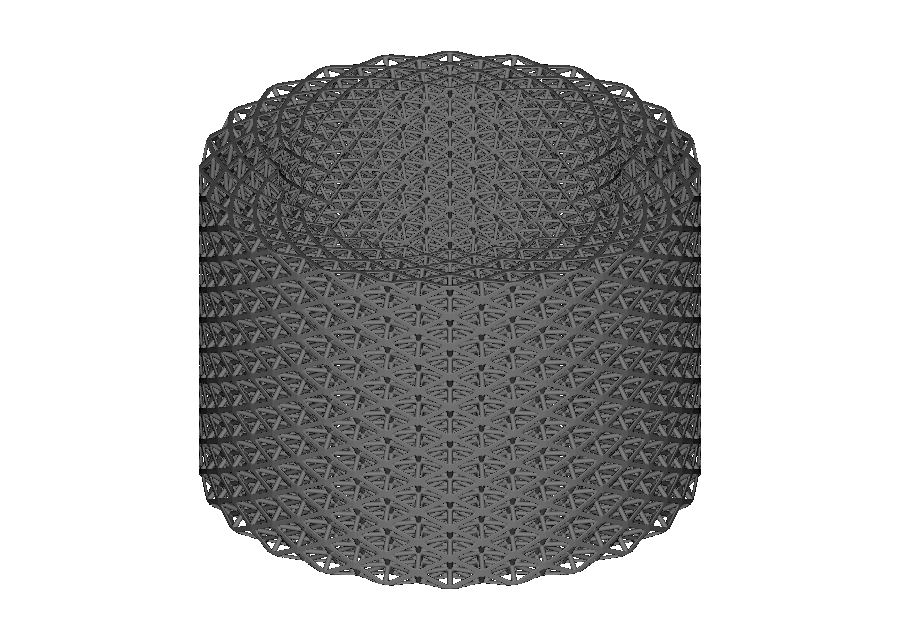
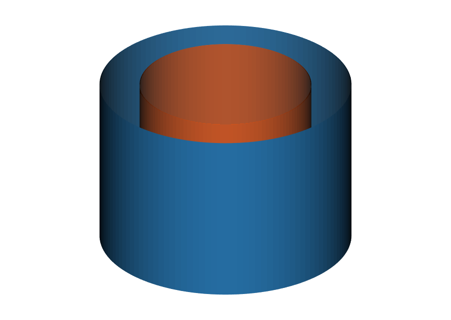
Selected face pair Octet lattice between facesThe selected-face view shows the orange inner wall and blue outer wall. The mapped view fills their gap with an octet beam network; its beams grow from 0.15 mm at the inner wall to 0.25 mm at the outer wall. OpenVCAD normally finds a compatible surface direction and cylinder seam automatically. Use explicit origins and flips only when you need an exact, repeatable seam location. See 13_cadquery_paired_face_octet.py.
Import STEP and select a face#
Use a STEP model when the surface was made elsewhere. pv.CADModel loads it once and keeps stable face references. You can select a face by index, or filter by properties such as surface type, approximate direction, area, or bounding-box overlap.
from pathlib import Path
import pyvcad as pv
import pyvcad_metamaterials as mm
import pyvcad_rendering as viz
model_path = (
Path(__file__).resolve().parents[2]
/ "data"
/ "3d_models"
/ "conformal_loft.step"
)
# Find the largest smooth B-spline face in the imported part to use as the surface.
model = pv.CADModel.from_step(str(model_path))
curved_faces = model.select_faces(surface_type="bspline")
surface = max(curved_faces, key=lambda face: face.area)
# Place a three-cell-thick cubic lattice along the selected freeform face.
cell_map = mm.cell_map_from_cad_face(
surface,
cells=(9, 7, 3),
height=9.0,
)
root = mm.cubic(cell_map, beam_radius=0.42, node_radius=0.48)
viz.Render(root)
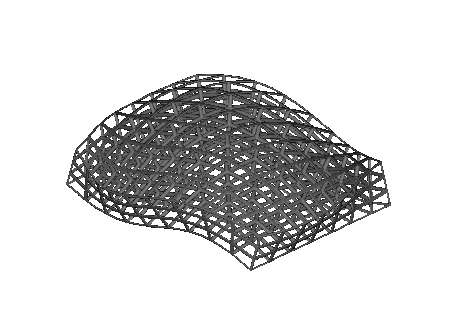
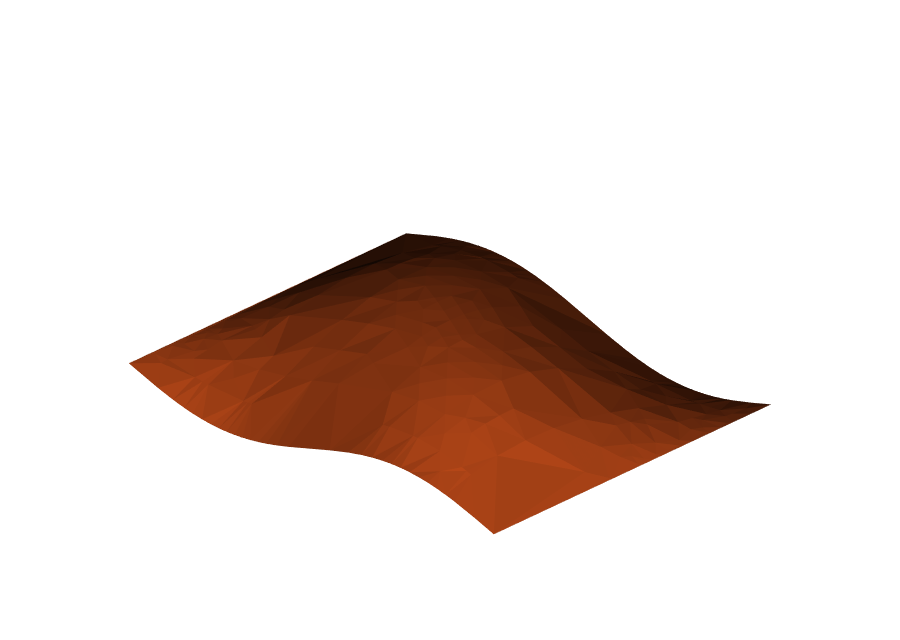
Selected B-spline face Mapped cubic latticeThe selected-face view is the largest B-spline face — a smooth freeform patch — from the imported part. The mapped view uses it as a three-cell-thick cubic lattice volume. The repository example resolves the STEP path relative to its own file: 14_imported_step_face_selection.py.
Passing several CADFace objects to cell_map_from_cad_face(...) returns a CellMapCollection. Each face supplies one separately mapped patch, and the lattice builder combines those patches into one node.
Create other surface shapes#
The workflow is not limited to cylinders or imported files. Any CadQuery operation that produces a selectable face can supply a map. These examples show how the same lattice-placement steps behave on several familiar surface shapes.
Lofted conical surface#
import cadquery as cq
import pyvcad as pv
import pyvcad_metamaterials as mm
import pyvcad_rendering as viz
# Loft two circles to make a tapered wall, then select that conical face.
cad = (
cq.Workplane("XY")
.circle(18.0)
.workplane(offset=32.0)
.circle(10.0)
.loft(combine=True, ruled=True)
)
surface = pv.CADModel.from_cadquery(cad.faces("%CONE")).faces[0]
# Bend one BCC layer over the tapered wall, extending 3 mm from the face.
cell_map = mm.cell_map_from_cad_face(
surface,
cells=(24, 10, 1),
height=3.0,
)
root = mm.bcc(cell_map, beam_radius=0.22, node_radius=0.28)
viz.Render(root)
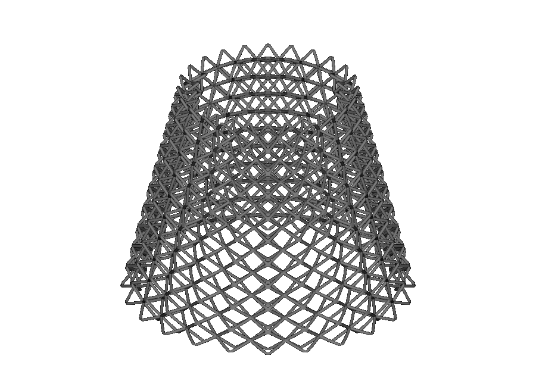
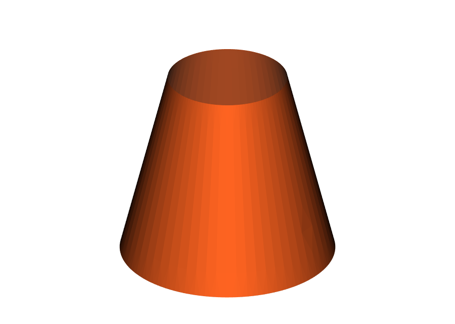
Lofted conical face Conformal BCC latticeThe selected face is the tapered wall made by lofting two circles. The mapped view shows a single BCC (body-centred cubic) beam layer following that wall. Run 15_cadquery_conical_bcc.py.
Spherical band#
import cadquery as cq
import pyvcad as pv
import pyvcad_metamaterials as mm
import pyvcad_rendering as viz
# Limit the sphere to an open band so its spherical face can carry the lattice.
cad = cq.Workplane(
obj=cq.Solid.makeSphere(
22.0,
angleDegrees1=-60.0,
angleDegrees2=60.0,
)
)
surface = pv.CADModel.from_cadquery(cad.faces("%SPHERE")).faces[0]
# Map one Schwarz-P sheet layer across the band, 4.5 mm along the face normal.
cell_map = mm.cell_map_from_cad_face(
surface,
cells=(14, 7, 1),
height=4.5,
)
root = mm.schwarz_p(cell_map, wall_thickness=0.45)
viz.Render(root)
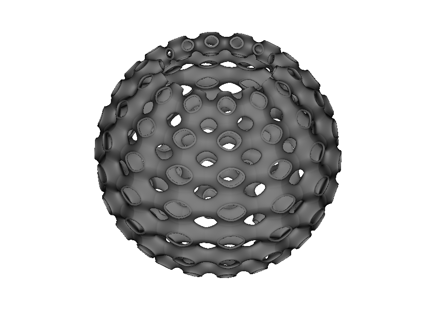
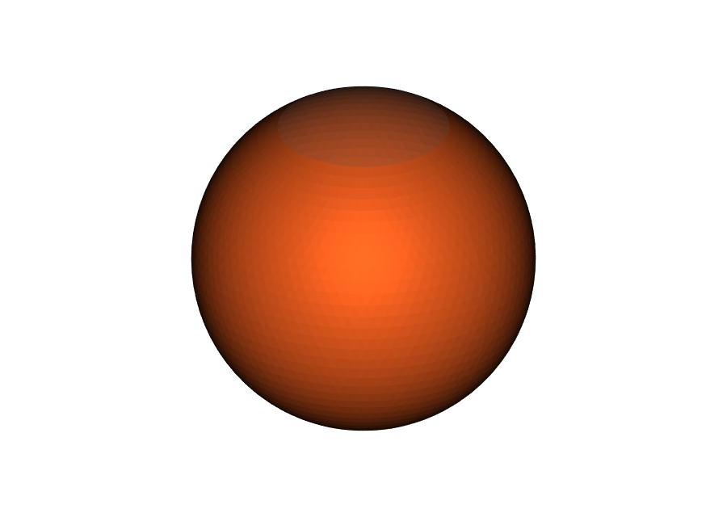
Spherical CAD face Conformal Schwarz-PThe selected face is an open spherical band: the top and bottom caps are omitted. The mapped view is one Schwarz-P layer, a smooth porous sheet, stretched over that band. 16_cadquery_spherical_band_schwarz_p.py starts from cq.Solid.makeSphere(...), selects its spherical face, and maps the layer over it.
Freeform surface from a Python function#
import math
import cadquery as cq
import pyvcad as pv
import pyvcad_metamaterials as mm
import pyvcad_rendering as viz
def saddle(u, v):
# Describe the freeform surface in ordinary Python coordinates.
x = 42.0 * (u - 0.5)
y = 34.0 * (v - 0.5)
z = 7.0 * math.sin(math.pi * (u - 0.5)) * math.sin(math.pi * (v - 0.5))
return x, y, z
# Turn the Python function into a CAD face, then use it as the mapping surface.
cad = cq.Workplane("XY").parametricSurface(
saddle,
N=20,
tol=0.02,
smoothing=None,
)
surface = pv.CADModel.from_cadquery(cad).faces[0]
# Follow the saddle with one diamond-beam layer, 2.5 mm thick.
cell_map = mm.cell_map_from_cad_face(
surface,
cells=(12, 10, 1),
height=2.5,
)
root = mm.diamond(cell_map, beam_radius=0.24, node_radius=0.3)
viz.Render(root)
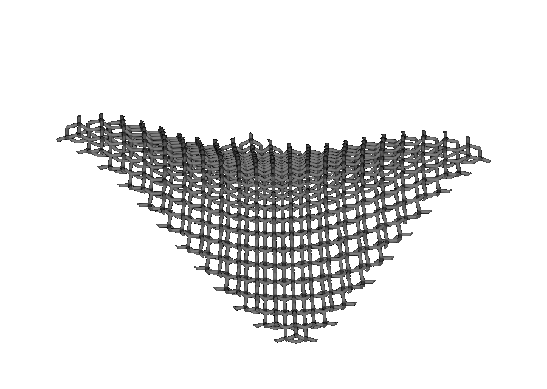
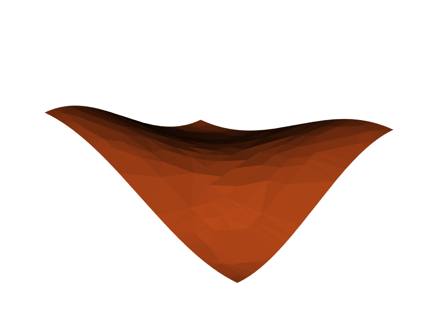
Parametric saddle face Conformal diamond latticeThe selected-face view is the wavy saddle produced by the Python function. The mapped view lays a diamond beam network across the same rises and dips. 17_cadquery_freeform_diamond.py uses parametricSurface(...), showing that a surface authored from a Python function follows the same workflow.
Validation is always final#
Creating a map checks that its cells do not collapse or turn inside out. This final validation is the reliable check for the resulting curved volume:
A
heightlarger than the tightest inside bend of a concave face can fold the offset — “Surface CellMap is folded or singular.”Pairing faces that cannot be matched consistently raises “No valid paired-surface correspondence was found,” with details for each attempted match.
If validation fails, reduce the height or choose faces that describe the same region. Once the map is valid, its lattice is an ordinary OpenVCAD node: it can use the graded fields from the previous guide, combine with maps from Conformal mapping triangle meshes, and go to any compatible compiler.